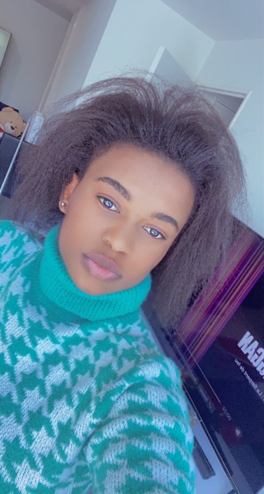
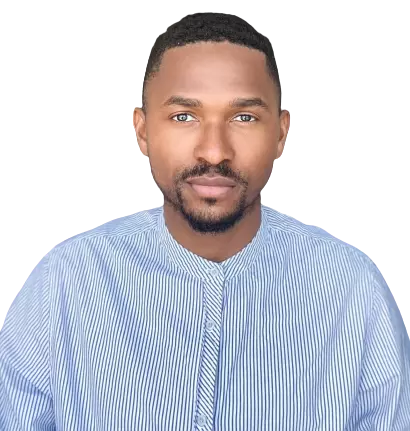

<div class="about-home">
    <div class="content my-container">
        <h2 class="title">LES FUTURS MARIÉS</h2>
        <div class="bride-groom">
            <div class="married bride">
                
                <div class="texts-bloc">
                    <p class="subtitle">
                        <i class="pi pi-arrow-up"></i>
                        <span>La Future Mariée</span>
                    </p>
                    <p class="name">Nadia</p>
                    <div class="speech">  
                        <p>En septembre 2016, chez ma marraine à Limoges, j'ai fait la connaissance de Samy Ndolè, AKA Zrotof. Je me souviens vaguement qu'il sortait d'un petit calcio, mais ce qui m'a le plus marqué, c'était sa belle personnalité qui se dévoilait peu à peu.
                            Au fil du temps, nous avons découvert une multitude de passions communes. Le baby-foot, nos soirées animées étaient autant de moments partagés, tissant ainsi les prémices d'une belle histoire. Nos voix s'harmonisaient souvent dans des acapelas, lui ensorcelant la guitare et moi, portée par l'émotion du chant.</p>
                        <p>En 2018, le destin a orchestré nos retrouvailles à Toulouse, lors de nos stages respectifs. Cet été-là, malgré les défis académiques exigeants et le stress qui nous étreignait, nos cœurs se sont rapprochés davantage. J'ai alors admiré sa personnalité authentique, et surtout sa belle âme teintée d’une bienveillance étonnante.</p>
                        <p>Au début de 2019, de retour à Limoges, nous avons décidé de nous engager l'un envers l'autre. Dès lors, nos chemins se sont unis pour ne plus jamais se séparer, liés par la profondeur de nos âmes, la tendresse de nos cœurs et <b>la promesse d'un amour éternel. ❤️</b></p>
                   </div>
                </div>
            </div>
            <div class="married groom">
                
                <div class="texts-bloc">
                    <p class="subtitle">
                        <span>Le Future Marié</span>
                        <i class="pi pi-arrow-up"></i>
                    </p>
                    <p class="name">Samuel</p>
                    <div class="speech">
                        <p>Je suis le fruit d'une mosaïque, une symphonie de lumières uniques, façonnant l'être que je suis, tissant la splendeur de mon existence. <b>Ma famille, mes amis</b>, ces éclats de vie, sont mes piliers, mes joyaux.</p>
                        <p>Cependant, avec le temps, au milieu de ces lueurs tant chéries, j'ai discerné une absence. Une lumière manquante, une harmonie incomplète. Je l'ai cherchée, je l'ai trouvée, je l'ai attirée, je l'ai séduite et désormais <b>sa douce clarté fait partie de moi</b>, de ma mosaïque à moi.</p>
                        <p>Une telle trouvaille se clame et se célèbre. Maintenant que je l'ai proclamé, je t'invite à venir la célébrer avec moi dans deux jours, promettant d'être inoubliables.</p>
                    </div>
                </div>
            </div>
        </div>
    </div>
</div>
